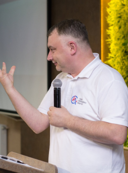
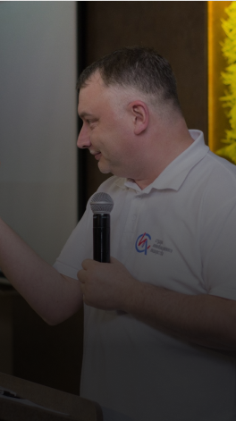
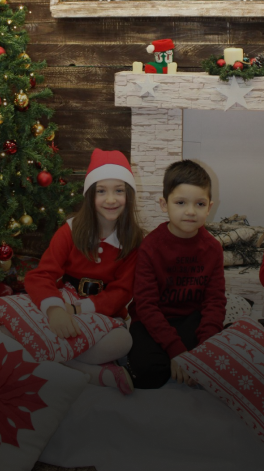
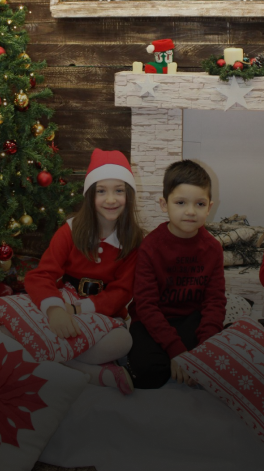

Master Class
All the results of these studies are published in books, manuals and articles, which
are applied within the local communities. Along with the trainings for trainers, we
organize and take part in various conferences and working groups which enable dialog
between practitioners and thinkers to enforce transformation


 
